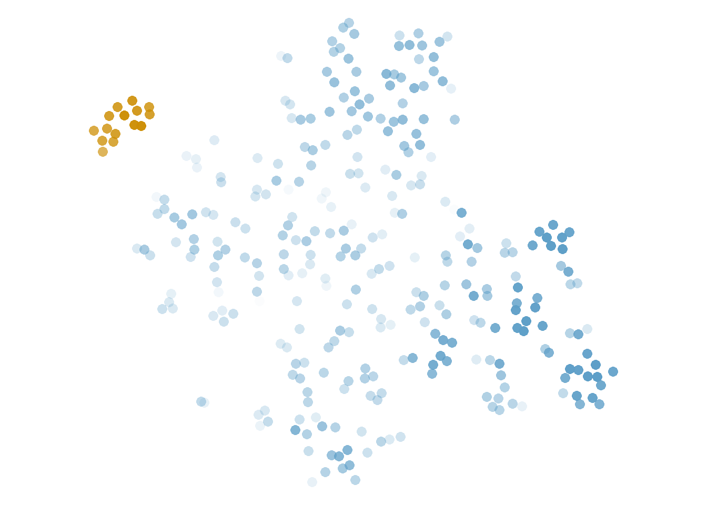
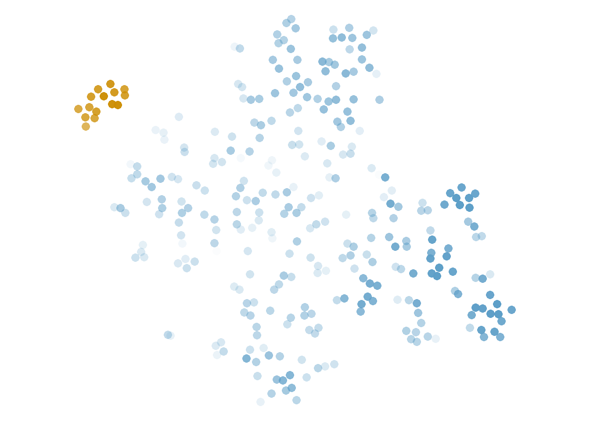

5 A cloud atlas
Clouds come in many shapes. Like the cotton-like masses of droplets we see in our skies, the clouds of word occurrences generated by token-level distributional models may take different forms, depending on their density, their size and their distinctiveness. “Meaning is use,” “Differences in usage correlate with differences in meaning,” “You shall know a word by the company it keeps”39 and other such catchy slogans sound intuitively accurate, but they hide a wealth of complexity and variation. Like meaning, context is far from orderly, and a myriad of words with different characteristics interact to generate the variation we see in these clouds.
In this chapter, we will try to make sense of the nephological topology, i.e. the variety of shapes that these clouds may take. For this purpose, we will classify hdbscan clusters mapped to t-sne representations in a way that can help us understand what we see when we see a cloud. The starting point is the shape that a researcher sees in the t-sne plot, which will be visually likened to types of meteorological clouds and further described in technical terms.
In Section 5.1 we will discuss the rationale behind this particular classification and the tools used to operationalize these decisions. A more detailed description of each cloud type and their technical interpretations follows in Section 5.2, while Section 5.3 zooms back out to compare the characteristics of the different types. Finally, we summarize the chapter in Section 5.4.
5.1 Rationale of the classification
When we look at the t-sne plot of a token-level model, we might see different kinds of shapes. For example, Figure 5.1 shows the t-sne solution for the same parameter configuration in six different lemmas. Some of them have clear, neat islands that stand out against a large mass, while others look smooth and uniform. Even this uniformity might take rounder or more angular shapes, with bursts of density when three or four tokens get together. As we have mentioned before, a t-sne solution that looks very uniform typically means that the perplexity is too high, whereas too many small islands suggest that it is too low. However, the models never seem to look better in the other perplexity values we have explored40.
Figure 5.1: Uncoloured t-sne representations of the same parameter settings (bound5lex-ppmiselection-focall) across six different lemmas.
Mapping an hdbscan clustering solution with \(minPts = 8\), like we do in Figure 5.2 for the same models shown in Figure 5.1, has proved to be a decent system for identifying the structure we see in these clouds. Clusters tend to match the tighter islands we see, and to highlight dense areas that might be too subtle for our eyes. In some cases, the clustering solution and the visualization do not agree, e.g. clusters are spread around or overlap. This can be taken as a sign of uncertainty, as an indication that the group of tokens involved is much harder to describe and model that others in which both algorithms do agree.
At the stage of the distance matrix, we can establish, for each of our tokens, its similarity to any other token in the model. These similarities are independent from each other: until we do not transform them, they do not even need to respect the triangle inequality41. In contrast, both clustering and visualization add a layer of processing meant to find patterns of similar tokens that are different from the other tokens. The relationships between different pairs of tokens are not independent any more: nearest neighbours are the nearest because other tokens are farther away. Sometimes these patterns are easy to find, which leads to very nice, interpretable clouds, like the top plots in Figure 5.2; sometimes they are very hard to find, resulting in lots of noise and/or less defined clouds, like in the last two plots.
Figure 5.2: T-sne representations of the same parameter settings (bound5lex-ppmiselection-focall) across six different lemmas, coloured coded with hdbscan clustering. Some of the heet clusters are gray because there are more clusters than colours we can clearly distinguish.
In this chapter we will look at a classification of the possible shapes, what we know about their genesis and how we can interpret them. The term cloud will refer to an hdbscan cluster or its noise: each of the coloured patches in the plots of Figure 5.2. The model itself, like a picture of the sky, might present multiple clouds of different types.
As we will see in Chapter 6 as well, the factors that interact to produce a group of similar tokens include the frequency of the context words, whether they co-occur within the sample and their type-level similarity. Clusters dominated by one context word may look similar to clusters dominated by a group of similar context words, and yet have different semantic interpretations. Along the way, we should keep in mind that the patterns observed here are tendencies, rather than rules: they are are a first map around an unknown land that still calls for more adventurous explorers.
The clouds have been classified into five main categories and an additional, orthogonal feature. The classification is based on a combination of t-sne visualization (perplexity 30) and hdbscan (\(minPts = 8\)) and it would probably be different if other visualization techniques or clustering algorithms are used.
The main categories, which will be described in more detailed in Section 5.2, are, in descending degree of clarity:
- Cumulus: the most defined clusters, revealing strong patterns that t-sne and hdbscan agree on;
- Stratocumulus: a slightly looser definition of still decent clouds;
- Cirrus: the weakest, smallest, less defined clouds, resulting from weaker patterns that might not be immediately evident without colour coding;
- Cumulonimbus: massive clouds;
- Cirrostratus: the hdbscan noise.
The inspiration for the names of the types of clouds is visual: the shapes that we would find when mapping the hdbscan clusters to the t-sne solution resemble the shapes of different types of meteorological clouds. Admittedly, for those who are familiar with meteorological types of clouds, this is not necessarily the most salient feature. Altitude, temperature and composition, instead, are more relevant in categorizing metereological clouds. As we will see in Section 5.3, it could be possible to map the \(\varepsilon\) (epsilon) values to the altitudes of the clouds, but that might already take the metaphor too far.
Technical criteria were defined in order to automatically categorize a large number of clusters. They are the result of both theoretical reasoning and trial and error, so that the final classification matches the intuitions derived from visual inspection. In other words: this classification should help us understand what we are looking at based on the shapes we identify, but technical, objective criteria were designed that approximate these intuitions for a larger scale analysis. These criteria make use of (i) the noise category from hdbscan, (ii) the relative size of the cluster, (iii) separability indices, (iv) cosine distances between the tokens and (v) \(\varepsilon\) values.
Criteria (i) and (ii) are straightforward. Criterion (iii) refers to two measures developed within the semvar package (Speelman & Heylen 2014; Speelman & Heylen 2017), kNN and SIL: they assess how well the items are clustered based on a distance matrix. In this case, we are looking for the match between the hdbscan clusters, which take the role of classes, and the euclidean distances within the t-sne plot. Let’s see how they work.
The first measure, kNN, is a separability index developed by Speelman & Heylen (2014) based on the proportion of “same class items” among the \(k\) nearest neighbours of an item. It answers the following question: looking at the hdbscan clusters mapped to the t-sne plot: how pure are the clusters? Do they form tight groups of the same colour, or do they overlap (maybe with noise tokens)? Recall that this has no bearing on the semantic composition of the cluster: instead, it refers to the visual homogeneity of the cluster as mapped to the plot.
For our purposes, it makes sense to set \(k\) to 8, the minimum number of tokens that a cluster should have based on the current hdbscan parameters. As a result, for each token \(x\) of a cluster \(C\), if the 8 tokens closest to \(x\) in the t-sne plot belong to the same hdbscan cluster \(C\), then kNN = 1, and if none of them do, then kNN = 0, regardless of what other class(es) the other items belong to. When the proportions are mixed, the ranking of the neighbours plays a role: if the tokens closest to \(x\) belong to \(C\), kNN will be higher; if instead they belong to another class, kNN will be lower. The kNN value of the cloud itself (\(C\)) is the mean of the kNN assigned to each of its members. A high kNN means that there are only a few instances of a different class mixed in among the tokens of the cloud: in other words, the cloud is quite compact and pure.
The problem with kNN is that it is biased in favour of large clouds. The larger the cloud is, the higher the proportion of tokens that is entirely surrounded by items of the same cluster. However, clusters with the same kNN and different sizes have different shapes. In order to counteract this bias, we include a SIL threshold.
SIL, or silhouette, is a popular measure of cluster quality that takes into account the distances between the members of a cluster and to the members outside that cluster (Rousseeuw 1987). When the tokens inside a cloud are much closer to each other than to tokens outside the cloud, SIL is highest, with an upper bound of 1. If the cloud is very spread out and/or other clouds are very close by, e.g. because they overlap, SIL will go down. Thus, a combination of high kNN and high SIL results in more compact, homogeneous, isolated clouds.
Criteria (iv) and (v) are the distances between the tokens belonging to the same cluster and the \(\varepsilon\) values respectively. The former refer to the original cosine distances between the tokens of the same cluster: the lower they are, the more similar the tokens are to each other. These may be different from the euclidean distances based on the t-sne plot. Finally, \(\varepsilon\) values are extracted from the hdbscan clustering and were explained in Chapter 2.2.4. The lower the \(\varepsilon\), the denser the area of the token, i.e. the smaller the area covered by its nearest neighbours. Noise tokens have typically the highest \(\varepsilon\) values: they are very disperse, and therefore the radius required to find 8 near neighbours is larger. The members of a cluster might have a variety of \(\varepsilon\) values: the lower the \(\varepsilon\), the closer it is to the core, i.e. the denser area of the cluster. To be clear, I am not making any claims about the technical or semantic interpretation of \(\varepsilon\) right now. A brief discussion on this is given in Chapter 6. Instead, the utility of these values lies in their straightforward mapping to the visual effects of the plot. If the \(\varepsilon\) values of a clustered token are close to those of noise tokens, the cluster is, in a way, submerged in noise: hdbscan is finding patterns that t-sne does not. On the contrary, if the \(\varepsilon\) values are much lower than for noise tokens, the cloud stands out.
The five criteria are combined in the following algorithm to classify the different clusters.
- The noise is categorised as a Cirrostratus cloud.
- The clusters that cover at least 50% of the modelled tokens (including noise) are Cumulonimbus clouds.
- The clearest, roundest, densest clusters are Cumulus clouds. They must at least have a
kNN\(\ge\) 0.75,SIL\(\ge\) 0.5 and mean cosine distance \(\le\) 0.5. In addition, less than 10% of the tokens in the cluster may have a higher \(\varepsilon\) than the lowest noise \(\varepsilon\), or the noise in the model must cover less than 10% of the tokens. - The smallest clusters, i.e covering less than 10% of the modelled tokens, if 75% of the model is noise or
kNN< 0.7, are Cirrus clouds. - The most decent of the remaining clusters are Stratocumulus clouds. They must have
kNN\(\ge\) 0.7,SIL\(\ge\) 0.5 or mean distance \(\le\) 0.2. In addition, either more than half of the tokens have lower \(\varepsilon\) than the noise tokens or no more than 10% of the modelled tokens are noise. - The remaining clusters are Cirrus clouds.
In addition, the category of Hail groups the clouds with at least 8 identical tokens; these can belong to any of the other classes.
Table 5.1 shows the number of clouds, either in medoid models or across all models, belonging to each of the categories. By definition, almost all models have a Cirrostratus cloud, i.e. noise tokens, and no more than one Cumulonimbus cloud, i.e. massive cloud. The rest of the clouds may occur more than once in the same model. The number of clouds that also belongs to the Hail category is given in parentheses.
| Cloud type | Clouds in Medoids | All clouds |
|---|---|---|
| Cumulus | 267 (25) | 6899 (459) |
| Stratocumulus | 412 (34) | 8777 (692) |
| Cirrus | 342 (2) | 9477 (32) |
| Cumulonimbus | 42 (15) | 1025 (221) |
| Cirrostratus | 254 (1) | 6453 (3) |
5.2 Types of clouds
In this section, the different cloud shapes will be described in some detail. Their general look on a plot will be compared to pictures of meteorological clouds and I will offer a technical interpretation for them.
Before going into the descriptions, an explanation of one of the measures that takes part in the technical interpretation is in order: the \(F\)-score. Clouds can be represented by the set of context words co-occurring with the tokens that compose it. The relationship between each context word \(cw\) and the cluster may be described in terms of precision and recall, already mentioned in Section 3.5: precision indicates the proportion of tokens co-occurring with \(cw\) that also belong to the cluster, while recall indicates the proportion of tokens within the cluster that co-occur with \(cw\). For example, if all the tokens in a cluster co-occur with the definite determiner de, de has a recall of 1 for that cluster; but in all likelihood, these tokens only constitute around 40% of the tokens co-occurring with de across the sample, resulting in a precision of 0.4. Both values can be summarized in an \(F\)-score, which is defined as the (weighted) harmonic mean of precision and recall. In this case, the unweighted \(F\), that is, where precision and recall are deemed equally important, equals 0.57. The higher the \(F\), the better the representativeness of the context word in relation to the cluster: an \(F\) of 1 indicates that all the tokens co-occurring with that word belong to that cluster, and all the tokens in that cluster co-occur with that word, while an \(F\) of 0 indicates the absolute lack of overlap between the domain of the context word and the clouds. When a context word has a high \(F\) in relation to a cluster, that cluster is dominated by the context word. This is a handy term that will come up frequently as I describe types of clouds, and especially in Chapter 6. In general, only context words that co-occur with at least two tokens within a cluster are considered, to avoid inflating the value of hapax legomena.
5.2.1 Cumulus clouds
In meteorological terms, Cumulus clouds look puffy: they are our prototypical and ideal images of clouds. As token-level clouds, they also correspond to our ideal images of clusters: mostly roundish, visually salient because of their density and isolation. We would be able to find them even without colour-coding: both t-sne and hdbscan agree that those tokens belong together. In Figure 5.3, the four rightmost clusters, in green, light blue, yellow and blue, are Cumulus; the rest are Stratocumulus clouds.


Figure 5.3: Example of Cumulus cloud: inspiration on the left, plot example on the right (nobound10lex-ppmiweight-focall of dof). Picture by Glg, edited by User:drini - photo taken by Glg, CC BY-SA 2.0 de, https://commons.wikimedia.org/w/index.php?curid=3443830.
Cumulus clouds are defined by a number of different measures with strict values, after excluding Cirrostratus (noise) and Cumulonimbus (massive clouds).
First, the clusters need to have both kNN \(\ge\) 0.75 and SIL \(\ge\) 0.5, as well as a mean pairwise cosine distance between the tokens of 0.5 or lower. The combination of these three strict thresholds ensures quite pure, compact, isolated clusters: they don’t visually overlap with other clusters or noise. The final requirement makes sure that the cloud stands out against the noise. One of the ways it can achieve this is by having an \(\varepsilon\) lower than the minimum noise \(\varepsilon\) in at least 90% of the tokens: at least 9 out of 10 tokens stand out. However, in models without any noise or with very little, noise \(\varepsilon\) values might be particularly high, so this threshold is not applied in models with less than 10% noise.
Most of these clouds are characterized by one context word with high precision and recall for the cluster. In fact, 75% of these clouds have a context word with an \(F\) of 0.72 or higher, while in 75% of the rest of the clouds the highest \(F\) is lower than that. These top context words also tend to have high pmi, but some may even have negative pmi.
The lemmas with the highest proportion of Cumulus clouds are heffen ‘to levy/to lift,’ hachelijk ‘dangerous/critical,’ schaal ‘scale/dish,’ gemeen ‘common/mean…’ and stof ‘substance/dust….’ They are all cases with strong collocational patterns of the kind discussed in Section 6.2. Lemmas that repel Cumulus clouds, on the other hand, such as haten ‘to hate,’ geestig ‘witty,’ gekleurd ‘coloured’ and hoekig ‘angular,’ lack such collocational patterns and instead form more uniform, fuzzy pictures.
5.2.2 Stratocumulus clouds
In meteorological terms, Stratus clouds are flat or smooth clouds: Stratocumulus clouds are then a flatter, less compact version of the Cumulus clouds discussed above. In Figure 5.4, all three clouds are Stratocumulus: from the large, disperse light blue cloud, to the more stretched orange one and the more compact green cloud that lost three points in the bottom right.
Figure 5.4: Example of Stratocumulus cloud: inspiration on the left, plot example on the right (bound5all-ppmino-focall of heffen). Picture by Joydeep - Own work, CC BY-SA 3.0, https://commons.wikimedia.org/w/index.php?curid=20357040.
The definition of Stratocumulus clouds takes a number of different measures and applies less strict thresholds than for Cumulus clouds. First the Cirrostratus, Cumulonimbus and Cumulus must classified, and the smallest clouds, either in noisy models or without high kNN, must be reserved for Cirrus. On the remaining clouds we apply two filters. First, they must either have kNN \(\ge\) 0.7, SIL \(\ge\) 0.5 or mean pairwise cosine distance \(\le\) 0.2. Second, either more than half the tokens have an \(\varepsilon\) value below the minimum noise \(\varepsilon\) value or the percentage of noise tokens in the model is lower than 10%.
Stratocumulus clouds are generally large: while 75% of either Cumulus or Cirrus have 28 tokens or fewer, half the Stratocumulus have 26 or more. However, in comparison to Cirrus they tend to have lower type-token ratio of context words42 and higher \(F\) values of their representative context words. In addition, the mean cosine distance between the tokens tend to be comparable to that in Cirrus clouds, in spite of the difference in size: in other words, they are larger but more compact and more clearly defined.
While lemmas that prefer Cumulus clouds tend to avoid Cirrus clouds and vice versa, the relationship with Stratocumulus is not so straightforward. A preference for Cumulus tends to go hand in hand with a preference for Stratocumulus, as in the case of heffen ‘to levy/to lift,’ but that is not necessarily the case. Both gemeen ‘common/mean…’ and stof ‘substance/dust…’ prefer Cumulus against either Cirrus or Stratocumulus, and haten ‘to hate,’ which prefers Cirrus to Cumulus, does have a slight preference for Stratocumulus too. One lemma that prefers Stratocumulus over anything else is heilzaam ‘healthy/beneficial,’ which is described in Section 6.2.1: even though its clusters tend to be dominated by clear collocates of the target, they are semantically heterogeneous.
5.2.3 Cirrus clouds
From a meteorological perspective, Cirrus clouds are high up and wispy. In these plots, the description translate to typically small, disperse clouds that we might not be able to isolate without the help of hdbscan. In Figure 5.5, both clouds belong to this category.

Figure 5.5: Example of Cirrus cloud: inspiration on the left, plot example on the right (bound5all-ppmiselection-focall of herstructureren). Picture by Dmitry Makeev - Own work, CC BY-SA 4.0, https://commons.wikimedia.org/w/index.php?curid=85153684.
Cirrus clouds are defined as small clouds in noisy models or with a low kNN, i.e. substantial overlap between the cloud and other clusters or noise tokens, as well as the remainder of the clouds after defining the other four categories.
They are generally small, like Cumulus clouds: in a few cases they cover more than 100 points, and they would be considered Stratocumulus if their SIL was higher and either their kNN or the percentage of tokens below noise was higher too.
In spite of their size, they have a high type-token ratio of context words and these context words have low \(F\), even compared to larger Stratocumulus clouds: in other words, they tend not to be represented by single powerful collocates, and instead their tokens co-occur with many different, infrequent words.
The weakness of their patterns should be seen as a tendency, rather than a law. They are more likely than Cumulus clouds to be semantically heterogeneous and hard to interpret, but it is not necessarily the case. In some lemmas with tendency to a more uniform internal structure, Cirrus clouds may group the few patterns that emerge at all. Lemmas that prefer Cirrus clouds, such as geestig ‘witty,’ gekleurd ‘coloured,’ hoekig ‘angular’ and haten ‘to hate,’ are precisely characterized by uniform-looking plots, low frequency collocates and weak patterns overall.
5.2.4 Cumulonimbus clouds
In the physical world, Cumulonimbus clouds are puffy (as indicated by the prefix Cumulo-) and bring rain and storm (nimbus). They are massive, towering clouds that may lie as low as Cumulus clouds and reach as high as Cirrus clouds. In our models, the Cumulonimbus category (the largest cluster in Figure 5.6) is the least frequent, but when it does occur, it dominates the picture.
Cumulonimbus clouds are minimally defined as clouds that cover at least 50% of the modelled tokens, including those discarded as noise. In practice, half of them cover at least 58.7% of the model or more, reaching as much as 95.7%. Next to them, we typically have one more cluster (in 85.6% of the cases); occasionally we may have two (11.1%) or even up to 5. The smaller cluster next to the massive Cumulonimbus tends to be a Cumulus, but all combinations are attested.
![Example of Cumulonimbus cloud: inspiration on the left, plot example on the right (bound10all-ppmiweight-focall of stof). Picture by fir0002flagstaffotos [at] gmail.comCanon 20D + Canon 17-40mm f/4 L, GFDL 1.2, https://commons.wikimedia.org/w/index.php?curid=887553.](assets/img/cumulonimbus.jpg) 
Figure 5.6: Example of Cumulonimbus cloud: inspiration on the left, plot example on the right (bound10all-ppmiweight-focall of stof). Picture by fir0002flagstaffotos [at] gmail.comCanon 20D + Canon 17-40mm f/4 L, GFDL 1.2, https://commons.wikimedia.org/w/index.php?curid=887553.
The most typical situation in which we encounter a Cumulonimbus cloud is when a small group of tokens is very tight, but very different from everything else, and the rest of the tokens are not distinctive enough to form different clusters. Most of these tokens are then grouped in this large, normally disperse Cumulonimbus cloud, which may seem to have inner structure captured by t-sne but not by hdbscan. The small group of tokens may be brought together by a set of similar context words (see Section 6.4), but most typically they represent an idiomatic expression.
In fact, the lemmas with a strong preference for this format, with Cumulonimbus in more than a third of their models, have a very clear idiomatic expression responsible for the small Cumulus clouds, so that the differences among the rest of the tokens are smoothed. These are gemeen ‘common/mean…,’ stof ‘substance/dust…’ and schaal ‘scale/dish.’ In contrast, lemmas that barely have any Cumulonimbus clouds (in less than 5% of the models), such as herroepen ‘to recant/to void,’ hoekig ‘angular,’ diskwalificeren ‘to disqualify’ and horde ‘horde/hurdle,’ lack such a strong pattern and have groups with similar frequencies and mutual differences instead.
In the case of gemeen ‘common/mean…,’ the tight cloud represents the expression grootste gemene deler ‘greatest common divisor’: both groot ‘big, great’ and deler ‘divisor’ co-occur with a large number of tokens but are, at the type-level, different from each other and to everything else. As a result, the token-level vectors of the grootste gemene deler ‘greatest common divisor’ tokens will be very similar to other tokens instantiating the same expression, and very different from everything else. Similarly, the pattern most frequently tied to this phenomenon in the case of stof ‘substance/dust…’ is stof doen opwaaien ‘lit. to stir up dust,’ an idiomatic expression referring to controversial actions and situations. Schaal ‘scale/dish,’ on the other hand, has two main idiomatic contexts that generate Cumulonimbus clouds, discussed in Section 6.2.2.
The rest of the tokens, i.e. the Cumulonimbus cloud itself, is not defined by either a strong dominating context word or group of similar context words, but instead is defined against this stronger, small cloud. Cumulonimbus clouds are not huge clouds of similar tokens, but a mass of tokens that is not structured enough in opposition to the distinctive small cloud that is next to it. It may have dense areas inside of it, but they are not semantically linked to each other. The reason they are a cluster is not because the tokens are similar to each other, as much as because the tokens in the small partner are very coherent and different from everything else. The mean distance between tokens in a Cumulonimbus cloud is typically very large, sometimes as large as within Cirrostratus (noise), and significantly larger than within other kinds of clouds — although the few examples of Cirrus and Stratocumulus co-occurring with Cumulonimbus also have relatively large mean distances. For a discussion on the semantic interpretation of these clouds, see Section 6.5.
5.2.5 Cirrostratus clouds
In meteorological terms, Cirrostratus clouds are high (Cirro-), flat and smooth (-stratus) clouds. For our purposes, they just indicate the noise tokens. They lie in the background of (almost) all our clouds and constitute 100% of two of the medoids. Considering the entirety of the models, 146 (2.3%) of them are fully Cirrostratus clouds (Figure 5.7).

Figure 5.7: Example of Cirrostratus cloud: inspiration on the left, model with 100% noise on the right (nobound10lex-ppmino-focall of hoopvol). CC BY-SA 3.0, https://commons.wikimedia.org/w/index.php?curid=100381.
It might be interesting to cluster the subset of tokens that make up these clouds, at least for some lemmas, but that is not pursued in these studies. It would require a deeper investigation of how hdbscan works with these models, why tokens are sometimes not clustered and how it interacts with parameters like \(minPts\). I will not try to semantically interpret these clouds, but they are always present and affect how other clouds are defined.
5.2.6 Hail
The final, orthogonal category can apply to any cloud, and often describes a section of it rather than the full cloud. It responds to a special criterion, to highlight the occasional phenomenon of superdense clusters. In Figure 5.8, three of the clouds (light blue, yellow and red) are Cumulus, while the rest are Stratocumulus; all of them but the yellow and green clouds present Hail, that is, extremely tight, dense circles of identical tokens. These are clouds with at least 8 identical tokens, defined as having a cosine distance lower than \(10^{-6}\).
As we can see in the blue cloud, one cluster may have more than one piece of Hail, as is the case in some Cumulonimbus clouds. In fact, in relative numbers, the cloud type with a higher tendency to generate Hail is the Cumulonimbus (in 21.56% of the cases), which is very fitting for a cloud that brings storms. Overall, 5% of the clouds, in 924 different models, have these characteristics.
Figure 5.8: Example of cloud with hail: inspiration on the left, plot example on the right (rel1-ppmiselection-focall of heet). Picture by Tiia Monto, CC BY-SA 3.0, https://commons.wikimedia.org/w/index.php?curid=88743807
These conditions are prompted by a low number of context words per token and a low type-token ratio (ttr) of these context words (see Figure 5.9). TTR is a measure of complexity computed as the number of different context words, i.e. types, divided by the total number of occurrences, i.e tokens. A ttr of 1 indicates that all words are only used once, while a lower ttr results from different words occurring multiple times. In this case, the higher the ttr, the richer the variety of context words captured by the model for the tokens in the cluster. Hail only covers a minority of the clouds, but it is clear that both the ttr and the number of context words per token play a role, with lower values for the Hail clouds. Hail tends to emerge in very restrictive models where many tokens can be grouped together because they have identical vectors: they shared the few words that survived the thresholds. They often reveal the strongest context words, i.e. those that also dominate in other clouds. But as we will see in Section 6.2, the dominating context word is not always indicative of a sense. Moreover, a larger variation in the context can give us a richer, more nuanced picture of the distributional behaviour of the target word.

Figure 5.9: Mapping between the type-token ratio of the context words and the mean number of context words per token in a cluster of a medoid, by whether the cloud has Hail.
We might be tempted to consider these clouds idiomatic expressions: they match, visually, what we think a representation of idiomatic expressions would be like. Instead, they match groups of context words that occur very frequently in a very short distance (either in terms of bag-of-words or dependency relations) to the target. It tells us something about bigrams: about how often niet ‘not’ occurs close to harden ‘to tolerate’; van ‘of’ to staal ‘steel/sample,’ op ‘on’ to spot ‘spotlight,’ or hang_ijzer ‘iron’ to heet ‘hot.’ At the same time, all the harden ‘to tolerate’ tokens co-occurring with niet ‘not’ are brought together in one pattern that disregards any other possible co-occurrence, any possible internal variation.
5.3 Patterns across types of clouds
Beyond the features used as formal criteria to define the types of clouds, we can find patterns across other relevant features. Most of these features are technical properties that can be extracted automatically from our dataset: the representativeness of context words \(F\), their pmi with the target lemma, the type-token ratio of context words co-occurring with the tokens in a cluster (ttr), and their \(\varepsilon\) values. In addition, we will take advantage of the semantic annotation and look at the entropy of the clouds, i.e. how homogeneous they are in terms of dictionary senses. The figures in this section represent clusters in the medoids, because including all the models results in a more cluttered version of the same patterns.
First, we will look at the properties of the most representative context word in each cluster, defined as the context word with a minimum frequency of 2 within the cluster and the highest \(F\)-score (explained in Section 5.2). Figure 5.10 plots the context words’ \(F\) on the horizontal axis and, on the vertical axis, their pmi with the corresponding target lemma, based on a symmetric window of 4 words to either side. The types of clouds are mapped to the colour of the points and the fill of the marginal boxplots. Therefore, a bright purple spot at \(x = 0.941\) and \(y = 9.89\) represents a Cumulus cloud whose most representative context word, e.g. deler ‘divisor,’ has an \(F\) of 0.941, i.e. it is a very good cue, and a pmi with the lemma of its model, e.g. gemeen, equal to 9.8, which is very high.
We can see that Cirrostratus clouds (noise) tend to have low \(F\) context words, and that these tend to have very low pmi values with the targets. Cumulus clouds, on the other side, have the highest \(F\), i.e. they tend to be dominated by one context word, and these context words tend to have high pmi. Cirrus and Cumulonimbus clouds have lower values than Cumulus clouds across both dimensions, while Stratocumulus spans in between. Moreover, the correlation between \(F\) and pmi is moderate to weak, with a higher value among Cumulus clouds (Spearman’s \(\rho\) = 0.55, p-value < 0.001) and much lower and/or less significant for Cumulonimbus and Cirrostratus
(\(\rho\) = 0.05, p-value \(\approx\) 0.085 and \(\rho\) = -0.15, p-value < 0.001, respectively), with minimal changes for different PPMI settings.
Figure 5.10: Mapping between the highest \(F\) between the clouds of the medoids and a context word and that context word’s pmi with the target, coloured by cloud type.
Second, we will look at the relationship between the highest \(F\)-score and the type-token ratio (ttr, described in Section 5.2.6). They are mapped to the horizontal and vertical axes respectively in Figure 5.11. As we can see, both Cirrus and Cirrostratus clouds tend to have a higher ttr than the rest; indeed, they also tend not to have Hail (see Table 5.1). In general, the more different context words we find in the cluster — the higher the ttr —, the lower is the representativity of the strongest context word — the lower the \(F\) —, but there is a really wide range of variation, and each type of cloud has a different profile. Cirrostratus clouds have higher ttr and lower \(F\), while the opposite defines Cumulus clouds; Stratocumulus and Cumulonimbus clouds have similar ttr to Cumulus but lower or much lower \(F\), and the ttr in Cirrus clouds is comparable to Cirrostratus, with a much higher \(F\)-score. In short, both the variety of context words co-occurring with the tokens of a cluster and the \(F\)-score of the most relevant of them play a role in the shape that the clouds take. This relationship notwithstanding, we should note that other factors also intervene, both in the constitution of the clusters and their semantic interpretation, such as the representativeness of other context words and the type-level distances between them.
Figure 5.11: Mapping between the highest \(F\) of a context word to a cluster and the type-token ratio (ttr) of context words in the cluster, coloured by cloud type.
Third, we will look at the \(\varepsilon\) values across different cloud types. They were part of their definition, insofar the proportion of tokens with a lower \(\varepsilon\) than the lower noise \(\varepsilon\) is a criterion for Cumulus, Stratocumulus and Cirrus clouds. Nevertheless, it could be useful to summarize the resulting patterns. In that spirit, Figure 5.12 shows, for each of the clusters in the medoids, the minimum, mean and maximum \(\varepsilon\) within a cluster. Note that this gives us no insight on the relationship between the \(\varepsilon\) of the tokens in the cluster and the values in other tokens, either clustered or noise. As we would expect, Cirrostratus clouds tend to have the highest \(\varepsilon\): their tokens are disperse, far away from other tokens. Cumulus, Stratocumulus and Cirrus tend to have relatively similar values, although some Cumulus clouds are quite low and Cirrus clouds are quite flat and never very low. The differences between them are more likely to be found in their relationship with the noise \(\varepsilon\). Cumulus clouds stand out as dense areas against a very disperse (i.e. high \(\varepsilon\)) background, whereas Cirrus clouds are just slightly denser than the rest of the clouds in their surroundings. Think of the uniform plots of haten and hoop in Figure 5.1 and the hdbscan interpretation in Figure 5.2: all the tokens look, roughly, equally disperse. Finally, Cumulonimbus clouds exhibit the widest range of all: their tokens vary from very dense areas, i.e. very low \(\varepsilon\), to very disperse ones, i.e. high \(\varepsilon.\)
Figure 5.12: Range of \(\varepsilon\) values within clouds of different types. Lines join the points belonging to the same cluster.
These characteristics can be roughly mapped to the altitude of the clouds from a meteorological perspective (see Figure 5.13). Figure 5.12 relies on a common everyday metaphor: high values above, low values below. But what counts as high and low here is rather arbitrary: low \(\varepsilon\) indicates a dense area in the plots, that is, that a token can find its 7 nearest neighbours in a very small radius, while a high \(\varepsilon\) indicates a sparse area, with large distances between a token and its nearest neighbours. At the same time, the metaphor of altitude is also coherent with the original goal of this mapping: the low values, or high densities, stand out to the viewer as if they were closer. Similarly, if we look at clouds on the sky from below, lower clouds are going to stand out: that is the case of Cumulus, Stratocumulus and, naturally, Cumulonimbus clouds.
Figure 5.13: Graphical representation of meteorological clouds at different altitudes. By Christopher M. Klaus at w:en:Argonne National Laboratory - Own work by en:User:Klaus, Public Domain, https://commons.wikimedia.org/w/index.php?curid=2760873
Finally, Figure 5.14 shows the entropy43 of clouds of different types in terms of the manually annotated senses, against the entropy across the whole model. Entropy is a measure of information, and in this case it works as follows: the higher the entropy, the more variation of senses and the more balanced their frequencies; the lower the entropy, the more one sense dominates. We would like the entropy of the cluster (the \(y\)-axis in Figure 5.14) to be as low as possible, that is, for the cluster to be as homogeneous as possible in terms of senses. At the same time, models with a higher initial entropy — due to the sense distribution of the lemmas they model — are more likely to have clusters with higher entropy.
On the one hand, the horizontal boxplots show that clouds of all types are equally likely to emerge in any model regardless of their sense distribution. This is consistent with the point I make in Chapter 6 that clouds do not model senses. On the other hand, the vertical boxplots show that the different cloud types do tend to exhibit different entropy values. Cumulus clouds are the most homogeneous, while the Cumulonimbus clouds tend to be as heterogeneous as Cirrostratus (noise) — they might even have higher entropy than their models as a whole. Cumulus clouds in particular, but sometimes also Stratocumulus and maybe Cirrus, may be completely homogeneous regardless of the sense composition of the model itself, but they can also have higher entropy. Stratocumulus clouds tend to have slightly lower entropy than Cirrus clouds, i.e. they tend to be more homogeneous, even though they also tend to be larger.

Figure 5.14: Mapping between the entropy in a medoid and in a cluster by cloud type.
5.4 Summary
Token-level distributional models process a wealth of complex, messy information and try to return clear, interpretable patterns. These patterns take different forms: sometimes we have very clear, isolated, dense groups of similar tokens, like our ideal image of clouds in a clear sky; other times, a pattern is harder to find, and we barely catch a few clear wisps against an overcast sky. The clouds of one model are not independent from each other, and depending on the power of their leading context words they might merge into larger masses or split into smaller groups; powerful small Cumulus clouds may force everything else into a huge Cumulonimbus clouds, and the tension between its semantic fields might even create Hail.
In this chapter we have seen the variety of shapes that emerges from these distributional models, in particular in the interaction between the t-sne visualization with perplexity 30 and the hdbscan clustering with \(minPts = 8\). We have linked the visual results to the variety of context words and their representativeness, and we have found patterns in their semantic homogeneity. We know that all lemmas exhibit all types of clouds, but in different proportions, related to their tendency towards strong collocational patterns. In the next chapter, we will delve into the linguistic interpretation of these clouds, that is, their collocational properties and their relationship to the manually annotated dictionary senses.